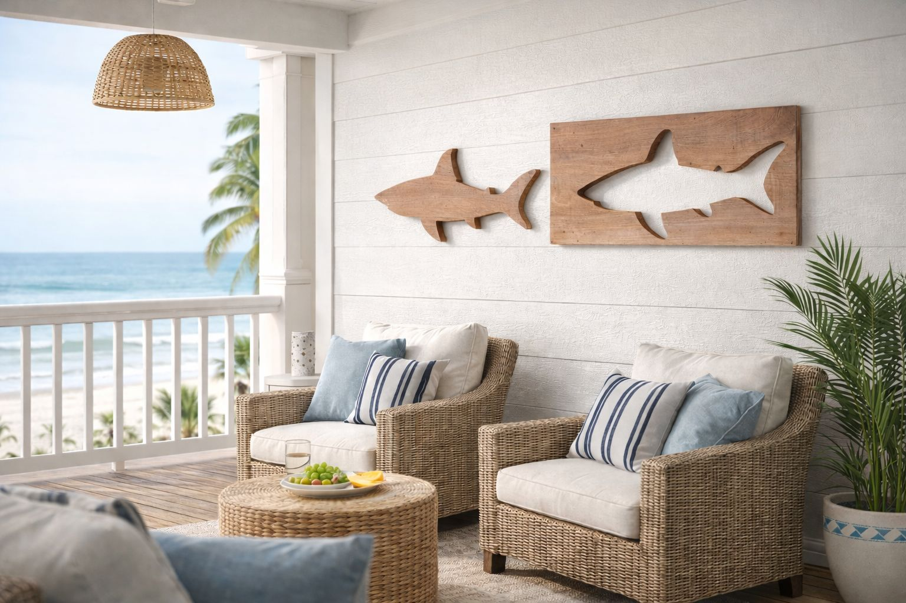

MACS Marcenaria
Decorações em madeira.
Fale Conosco
Decorações em madeira.
Fale ConoscoPor trás das máquinas, temos Vanderlei S. do Carmo (Deco).Somos especialistas em itens decorativos feitos em madeira, trazendo qualidade e sofisticação para seu ambiente.
Veja alguns dos nossos projetos a seguir.

Peça artesanal feita em madeira, ideal para ambientes sofisticados ou temáticos. O tubarão decorativo traz personalidade e charme, sendo perfeito para compor salas, escritórios ou espaços de lazer.
Entre em contato para solicitar um orçamento ou tirar dúvidas.